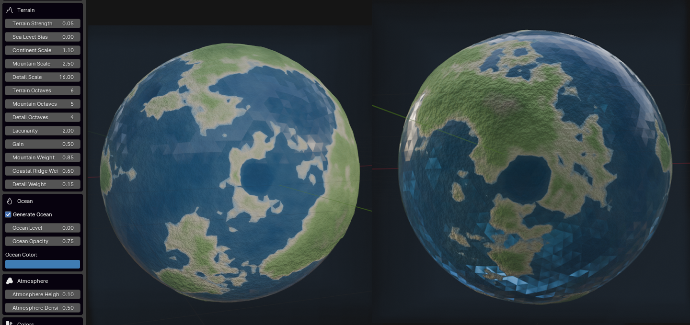

GEN Planet Procedural
Generate procedural planets with layered terrain.

Metadata
Generate procedural planets with layered terrain.
Generate procedural planets with layered terrain
Builds a high-resolution icosphere base, radial displacement through combined fBm + ridged-multifractal noise for continents and mountains. Optionally adds an ocean shell, impact craters, and a volumetric atmosphere shell.
GEN Planet Procedural - Generate procedural planets with layered terrain. Builds a high-resolution icosphere base, radial displacement through combined fBm + ridged-multifractal noise for continents and mountains. Optionally adds an ocean shell, impact craters, and a volumetric atmosphere shell.
Properties
| Attr | Label | Type | Default | Range | Subtype / Options | Description |
|---|---|---|---|---|---|---|
planet_radius | Planet Radius | float | 1 | 0.1 .. 100 | Base radius of the planet | |
resolution | Resolution | int | 256 | 32 .. 1024 | Approximate target vertex density along the equator (drives icosphere subdivisions) | |
extra_subdivisions | Extra Subdivisions | int | 1 | 0 .. 3 | Additional uniform subdivisions applied before displacement for finer detail | |
random_seed | Random Seed | int | 0 | 0 .. 10000 | Seed used to offset noise sampling | |
terrain_strength | Terrain Strength | float | 0.05 | 0 .. 1 | Overall radial displacement amplitude as a fraction of planet radius | |
sea_level_bias | Sea Level Bias | float | 0 | -0.5 .. 0.5 | Shifts the continental signal up/down before sea level. 0 = ~50/50 land/ocean | |
continent_scale | Continent Scale | float | 1.1 | 0.1 .. 10 | Frequency of large continental masses (smaller = larger continents) | |
mountain_scale | Mountain Scale | float | 2.5 | 0.5 .. 20 | Frequency of ridged mountain ranges (plate-tectonic style) | |
detail_scale | Detail Scale | float | 16 | 1 .. 64 | Frequency of fine surface detail | |
terrain_octaves | Terrain Octaves | int | 6 | 1 .. 10 | Number of fBm octaves for continental shape | |
mountain_octaves | Mountain Octaves | int | 5 | 1 .. 10 | Number of ridged-multifractal octaves for mountains | |
detail_octaves | Detail Octaves | int | 4 | 1 .. 8 | Number of octaves for high-frequency surface detail | |
terrain_lacunarity | Lacunarity | float | 2 | 1.5 .. 3.5 | Frequency multiplier between octaves | |
terrain_gain | Gain | float | 0.5 | 0.2 .. 0.9 | Amplitude multiplier between octaves (controls roughness) | |
mountain_weight | Mountain Weight | float | 0.85 | 0 .. 2 | Contribution of ridged mountain layer to total displacement | |
coast_ridge_weight | Coastal Ridge Weight | float | 0.6 | 0 .. 2 | Strength of ridge lines along continent boundaries (plate-tectonic mountain ranges) | |
detail_weight | Detail Weight | float | 0.15 | 0 .. 1 | Contribution of fine detail layer to total displacement | |
generate_ocean | Generate Ocean | bool | true | Generate an ocean shell sphere | ||
ocean_level | Ocean Level | float | 0 | -0.2 .. 0.5 | Ocean shell height above base planet radius (fraction of radius). 0 = ~50/50 land/ocean | |
ocean_opacity | Ocean Opacity | float | 0.75 | 0 .. 1 | Alpha opacity of the ocean surface | |
ocean_color | Ocean Color | float vector | 0.05, 0.2, 0.45 | 0 .. 1 | COLOR | Surface color of the ocean shell |
atmosphere_height | Atmosphere Height | float | 0.1 | 0 .. 1 | Height of the atmosphere shell (fraction of radius) | |
atmosphere_density | Atmosphere Density | float | 0.5 | 0 .. 2 | Volumetric density of the atmosphere | |
surface_color | Surface Color | float vector | 0.45, 0.4, 0.32 | 0 .. 1 | COLOR | Base color of the planet surface |
atmosphere_color | Atmosphere Color | float vector | 0.5, 0.7, 1 | 0 .. 1 | COLOR | Color of the atmosphere |
generate_craters | Generate Craters | bool | false | Generate impact craters. Off by default for tectonic-looking worlds | ||
crater_count | Crater Count | int | 8 | 0 .. 200 | Number of impact craters | |
generate_clouds | Generate Clouds | bool | false | Reserved for future cloud layer generation |
Operators
| Class | bl_idname | Label | Options | Description |
|---|---|---|---|---|
ZENV_OT_PlanetProcedural_Generate | zenv.planet_procedural_generate | Generate Planet | Generate a procedural planet |